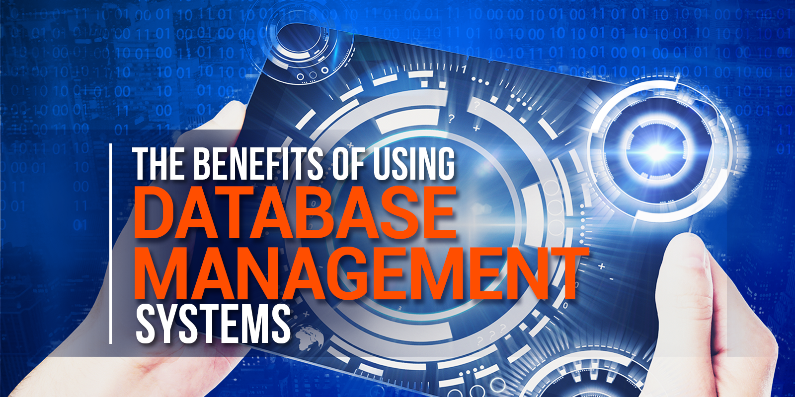
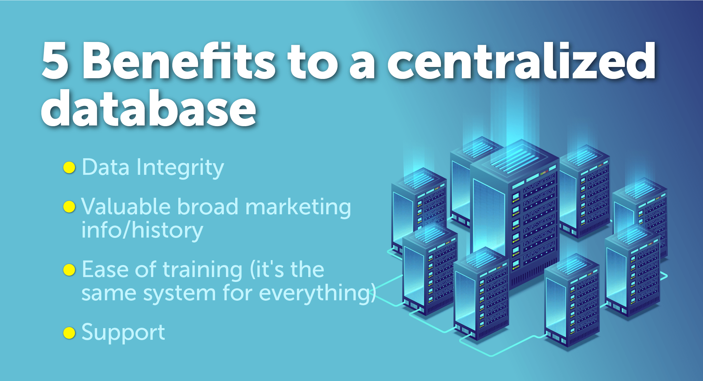

A database is an organized collection of data, generally stored and accessed electronically from a computer system. Where databases are more complex they are often developed using formal design and modeling techniques.
The database management system (DBMS) is the software that interacts with end users, applications, and the database itself to capture and analyze the data. The DBMS software additionally encompasses the core facilities provided to administer the database. The sum total of the database, the DBMS and the associated applications can be referred to as a "database system". Often the term "database" is also used to loosely refer to any of the DBMS, the database system or an application associated with the database.
Computer scientists may classify database-management systems according to the database models that they support. Relational databases became dominant in the 1980s. These model data as rows and columns in a series of tables, and the vast majority use SQL for writing and querying data. In the 2000s, non-relational databases became popular, referred to as NoSQL because they use different query languages.
Formally, a "database" refers to a set of related data and the way it is organized. Access to this data is usually provided by a "database management system" (DBMS) consisting of an integrated set of computer software that allows users to interact with one or more databases and provides access to all of the data contained in the database (although restrictions may exist that limit access to particular data). The DBMS provides various functions that allow entry, storage and retrieval of large quantities of information and provides ways to manage how that information is organized.
Because of the close relationship between them, the term "database" is often used casually to refer to both a database and the DBMS used to manipulate it. Outside the world of professional information technology, the term database is often used to refer to any collection of related data (such as a spreadsheet or a card index) as size and usage requirements typically necessitate use of a database management system.
Existing DBMSs provide various functions that allow management of a database and its data which can be classified into four main functional groups:
Both a database and its DBMS conform to the principles of a particular database model.[5] "Database system" refers collectively to the database model, database management system, and database
Physically, database servers are dedicated computers that hold the actual databases and run only the DBMS and related software. Database servers are usually multiprocessor computers, with generous memory and RAID disk arrays used for stable storage. Hardware database accelerators, connected to one or more servers via a high-speed channel, are also used in large volume transaction processing environments. DBMSs are found at the heart of most database applications. DBMSs may be built around a custom multitasking kernel with built-in networking support, but modern DBMSs typically rely on a standard operating system to provide these functions.[citation needed]
ce DBMSs comprise a significant market, computer and storage vendors often take into account DBMS requirements in their own development plans.
Databases and DBMSs can be categorized according to the database model(s) that they support (such as relational or XML), the type(s) of computer they run on (from a server cluster to a mobile phone), the query language(s) used to access the database (such as SQL or XQuery), and their internal engineering, which affects performance, scalability, resilience, and security.
Databases are used to support internal operations of organizations and to underpin online interactions with customers and suppliers (see Enterprise software).
Databases are used to hold administrative information and more specialized data, such as engineering data or economic models. Examples include computerized library systems, flight reservation systems, computerized parts inventory systems, and many content management systems that store websites as collections of webpages in a database.
 